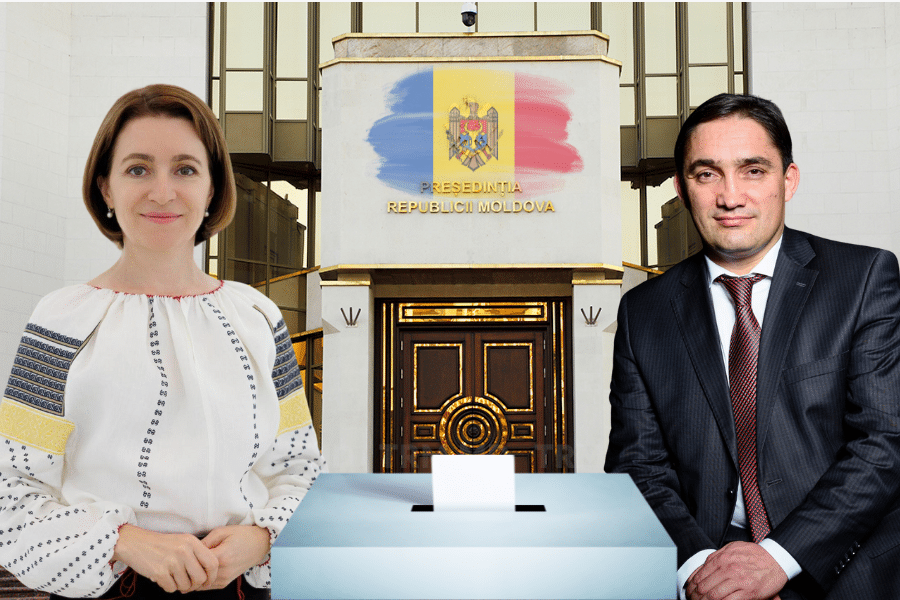

Ultimele Știri
Pe 3 noiembrie va fi organizat turul II al alegerilor prezidențiale
În două săptămâni, în Republica Moldova va avea loc turul II
al alegerilor prezidențiale. Lupta se va da între primii doi candidați
care au acumulat cel mai mare număr de voturi la primul tur de scrutin.
Conform datelor preliminare, după prelucrarea a 98,51% din procesele-verbale
la alegerile din 20 octombrie, Maia Sandu a acumulat 42,07% voturi, iar Alexandr
Stoianoglo - 26,27%.
„Informațiile preliminare arată că nici unul din cei 11 candidați la funcția de președinte al Republicii Moldova
nu a acumulat cel puțin jumătate din voturile alegătorilor care au participat la alegeri.
Respectiv, în termen de două săptămâni urmează a fi organizat cel de-al doilea tur de scrutin”, a declarat, luni, președinta CEC,
Angelica Caraman, într-un briefing de presă.
Până la prezentarea documentelor electorale în original la CEC, datele prezentate au caracter preliminar.
Consiliile electorale de circumscripție au la dispoziție 48 de ore după închiderea secțiilor de voatre pentru a
prezenta procesul-verbal cu privire la totalizarea rezultatelor alegerilor pentru circumscripții.
Ultimele s-au închis secțiile de votare din Canada, luni la ora 07.00, ora Chișinăului.